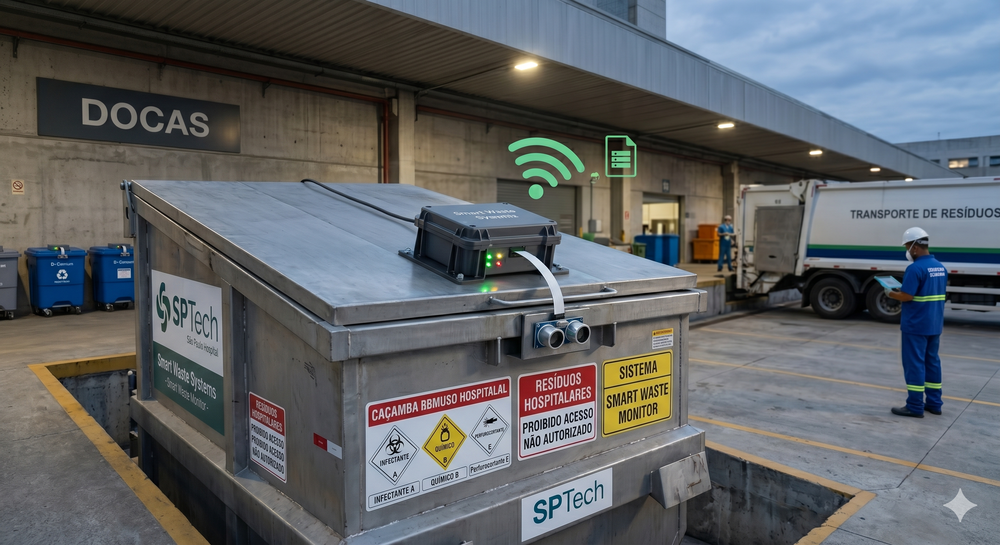
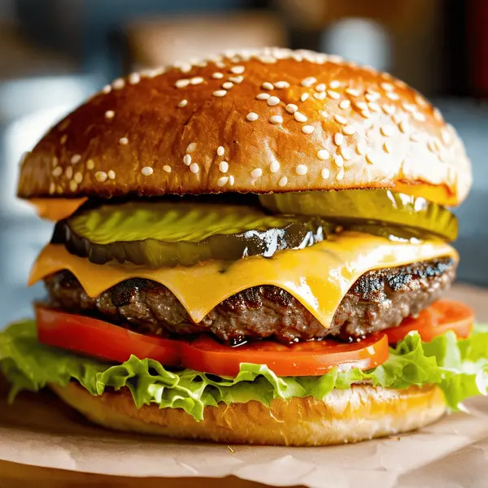

A interface e o que vem atrás.
HTML · CSS · JavaScript
Java · Angular · MySQL
PORTFÓLIO PESSOAL / VOL. 01
EM FORMAÇÃO. EM MOVIMENTO.Muito prazer,
Uma interface é só o começo.
Eu também quero entender o que acontece por trás.
Da música clássica à gestão de resíduos: meus projetos são o lugar onde testo o que aprendo.
Veja o que já construí ↓SPTech / Deloitte / Código em construção01 / SOBRE MIM
Sou Guilherme Silva Domingues, estudante de Análise e Desenvolvimento de Sistemas na SPTech e estagiário na Deloitte, na área de Engenharia de IA e Data.
Desenvolvo conhecimentos em projetos acadêmicos com Java, JavaScript, Angular e MySQL, além de estudar AWS e Docker. Tenho interesse em programação, análise de dados e construção de aplicações web.
Minha experiência acadêmica envolve lógica de programação, orientação a objetos, integração com banco de dados e dashboards.
O QUE EU LEVO PARA O CÓDIGO
HTML · CSS · JavaScript
Java · Angular · MySQL
Orientação a objetos · Banco de dados
Dashboards · Git & trabalho em equipe
AWS · Docker
Computação em nuvem
02 / PROJETOS SELECIONADOS
Seleção de projetos acadêmicos e web.
Abra os detalhes ou explore o código.
Uma plataforma para dar os primeiros passos na música clássica. Cursos, quizzes e uma dashboard para acompanhar a evolução no aprendizado.

02Tecnologia aplicada à gestão de resíduos. Monitoramento de volume com sensores para apoiar o controle e o planejamento das coletas.

03Uma experiência web para realização de pedidos. Um projeto de desenvolvimento de interface aplicado ao universo de uma hamburgueria.
03 / TRAJETÓRIA
AGO 2026 — ATUAL
Technology & Transformation
Atuação como estagiário na área de Engenharia de IA e Data. Estudos e capacitação em computação em nuvem por meio do AWS Skill Builder.
2026
São Paulo Tech School · Graduação
2023
ETEC de Vila Formosa
04 / APRENDIZADO
A CONVERSA CONTINUA
Quero seguir meu caminho como desenvolvedor Full-Stack.
Para falar sobre projetos, tecnologia ou
oportunidades: